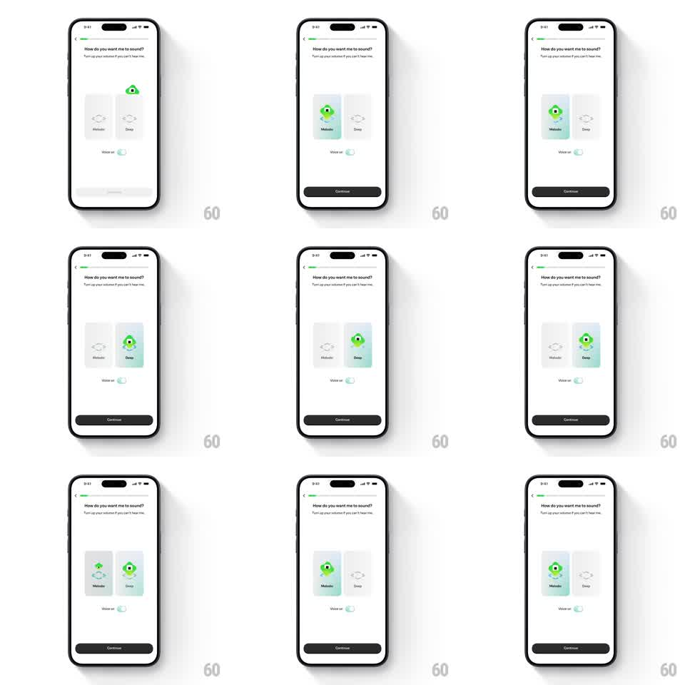

Media
Frame-by-frame

Rebuild this interaction 1:1: Brilliant's voice picker - a small green one-eyed character hops between two voice option cards (Melodic, Deep) with spring physics, and whichever card it lands on fills green as the chosen voice.

Rebuild this interaction 1:1: Brilliant's voice picker - a small green one-eyed character hops between two voice option cards (Melodic, Deep) with spring physics, and whichever card it lands on fills green as the chosen voice. ## Integration Integration: stack-agnostic spec - springs given as stiffness/damping, timed motions as duration + curve; map every value to your framework and animation library of choice. ## Scene Onboarding screen: "How do you want me to sound?" title with subcopy, two rounded option cards side by side (each a planet-style icon with a label below: Melodic, Deep), a "Voice set" toggle row under them, and a dark Continue button that appears once a choice lands. ## Motion spec Pattern: spring-hop character that embodies the selection. - The character idles on the current card with a gentle bob (+/- 3px, 2s). - On tapping the other card, the character hops in an arc (up ~30px, across, ~400ms with spring ~280/14 on landing), squashing 15% on takeoff and landing. - The destination card fills green from the bottom up (200ms, clipped wave) as the character lands; the old card drains back to grey. - The character's eye looks toward the hop direction mid-flight and blinks once after landing. - The Voice set toggle flips on with a knob slide (150ms) and Continue slides up (250ms) after the first selection. ## Calibration - The hop is the personality: arc, squash, one bounce - no linear slides. - Card fill and character landing hit the same frame; they read as one event. ## Reduced motion Character crossfades between cards; card fill crossfades (200ms). ## Don't miss - Only the selected card is green - the character and the fill always agree. - The planet icons stay grey even on the selected card; the fill does the talking.